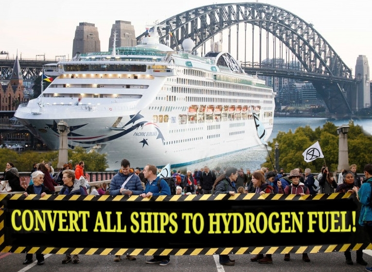

I'm Steve, I am currently on a Pacific cruise, conducting intensive research into the cruise ship industry. I feel bothered by the fact that shipping is such an enormous emitter of CO2, and wins hands down as the most heavily carbon-emitting way to take a holiday. At first I was reluctant to go on a cruise for that reason. But I looked into it and found out a few interesting things.
One is that despite carrying around 90% of the world's trade per ton per kilometer, globally shipping emits slightly less carbon than flying (3% vs 4% of all emissions). Hard to fathom at first, until you think that millions of people fly relatively frequently. Globally there are now around 40 million flights every day.
The other thing I found is that zero-carbon shipping is relatively achievable in the medium to long term.
If you do a web search for hydrogen fuel for various forms of transport, you find a lot of information so I won't go into it here. But basically there are two main ways of using hydrogen to power a vehicle:
1, Using hydrogen to create electricity that can directly power an electric motor or go into battery storage (Hydrogen Fuel Cell Electric)
2, Using either hydrogen or products made from hydrogen like methanol or ammonia (hydrogen and nitrogen in the one molecule) as fuel in an internal combustion engine.
What I've read leads me to think that, in the short term at least, burning a hydrogen-based fuel in an internal combustion engine looks like the most practical way to go for shipping. The main immediate reason is that we can convert existing diesel engines to using hydrogen, methanol or ammonia, meaning we can get it happening right now, starting with existing ships. Another reason, which is a long term consideration, is that fuel cell electric power is only more efficient with less of a load, say a car running along a flat road, or an empty truck. Internal combustion engines are more efficient when pulling a heavy load. You can't get a greater load than trying to drag an enormous iron shopping mall like the Pacific Adventure along an ocean. Except launching a vehicle into space I suppose.
One drawback of any internal combustion engine is that whatever fuel it uses it will always produce nitrous oxide which is 265 times stronger than carbon dioxide as a greenhouse gas. There are ways of capturing this, such as the AdBlue added to conventional engines along-side diesel fuel. Methanol actually produces far less NOx than other fuels.
So if we're going the ICE route we then need to decide if we use straight H2 or process it into ammonia or methanol first. Ammonia has a few advantages even though it is a dangerous chemical if it gets loose. It can be stored as a liqid at much warmer temperatures than liquid hydrogen, and has a greater energy density than H2. It is, after all, the preferred way to transport hydrogen for any purpose. Methanol sounds a bit bad, because it does contain carbon, but it's definitely in the running as a low-CO2 option. To get and idea of storage capacity, this article cites a comparison showing 16,000 m3 for methanol and 20,000 m3 for ammonia, compared with 8,000m3 for fuel oil to do the same amount of work .
As yet the production of green hydrogen and its derivatives still needs to be scaled up considerably to make a serious dent in the carbon output of shipping. But when should we start pushing for change?
(disclaimer: not a real protest)
convert2h@gmail.com
You can read about the first ship to use an existing engine converted to a mix of ammonia and Diesel
Here is a pdf from shipping giant Maersk about their plans for ammonia and methanol conversions